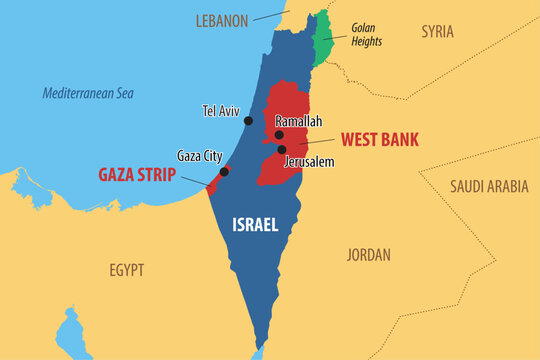
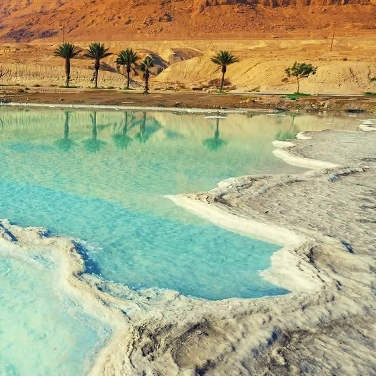
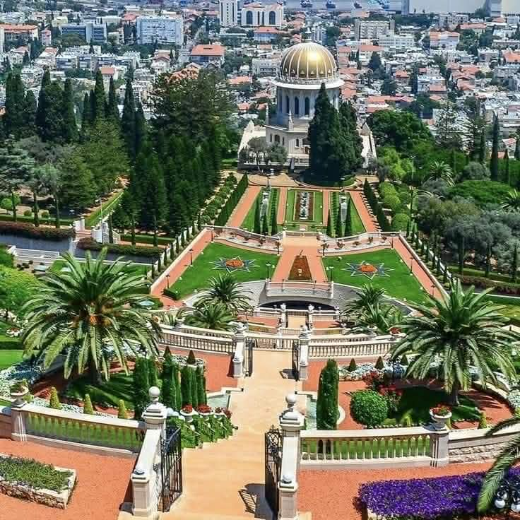
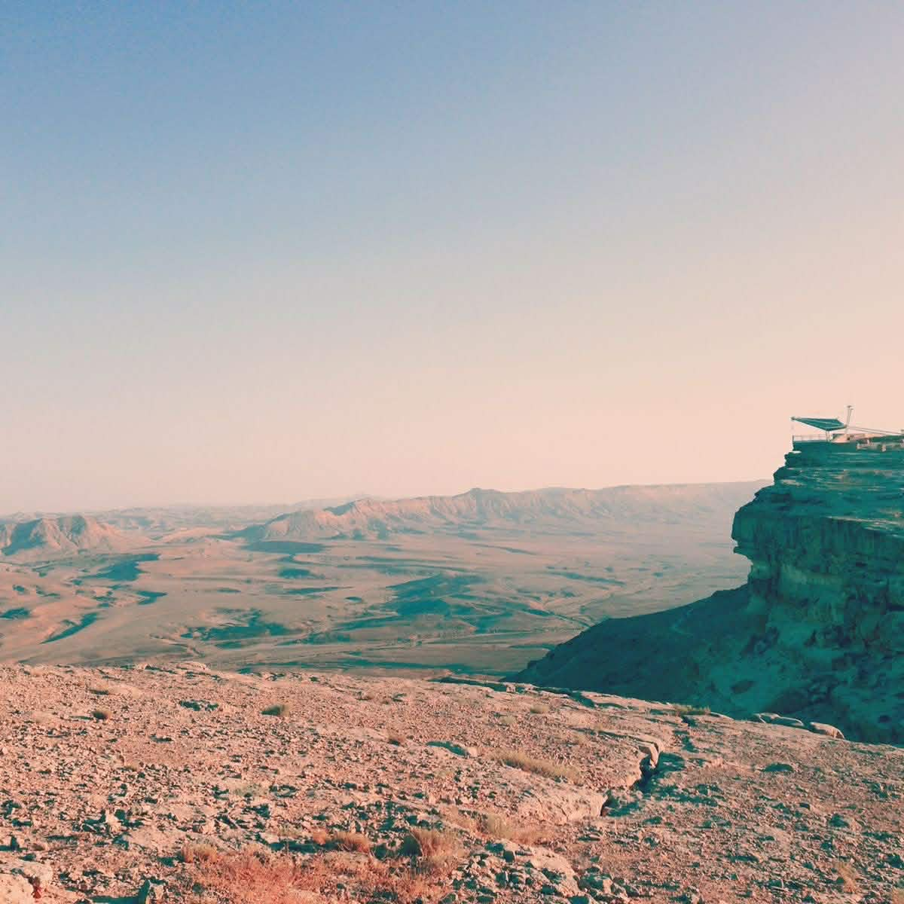
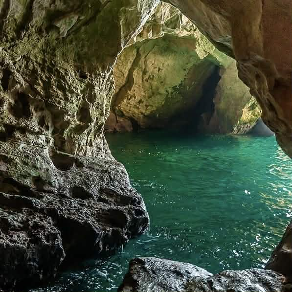
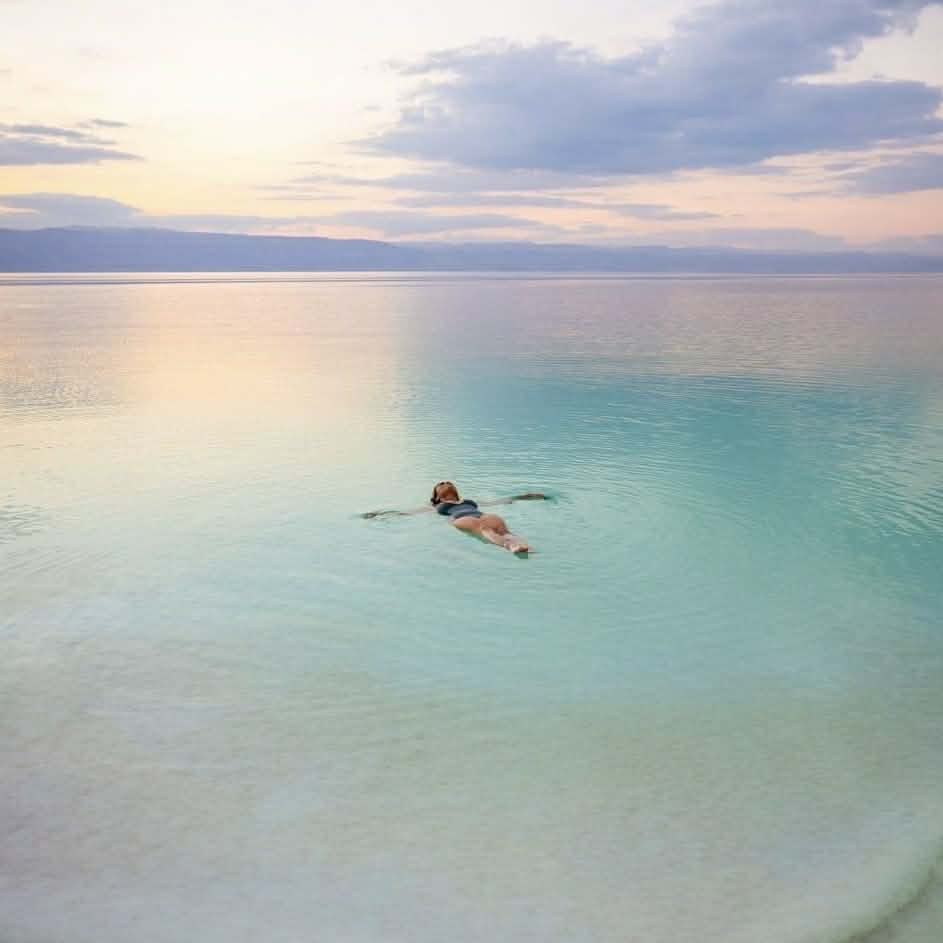
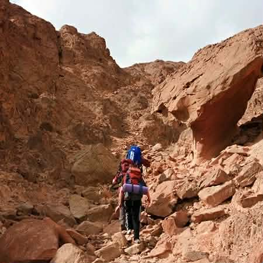
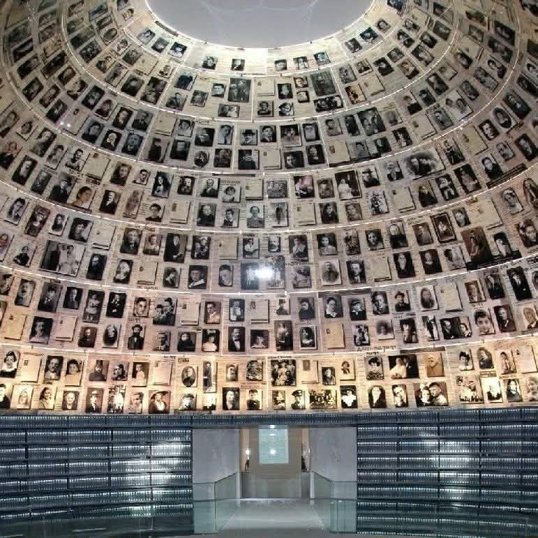
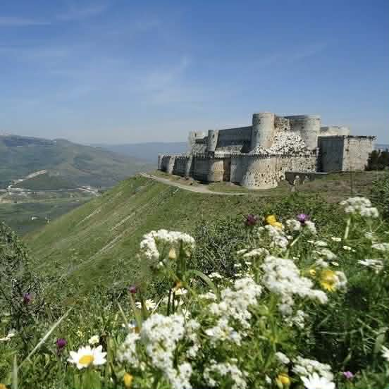
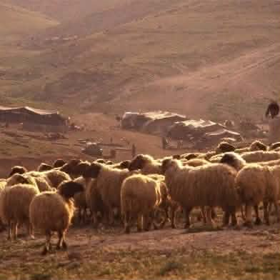

|
|
|
|
 |
Israel is a fascinating country that has something for everyone. Here are some of the top destinations that you shouldn't miss when visiting Israel:




|
1. The Dead Sea: Known for its extreme salinity allowing people to float, located at the lowest point on Earth. |
2. Baháʼí Gardens: Located in Haifa, this site offers stunning terraced gardens and panoramic views. |
3. Ramon Crater (Makhtesh Ramon): A massive geological crater in the Negev Desert popular for hiking. |
4. Rosh Hanikra: Dramatic limestone grottoes on the Mediterranean coast. |





|
1. Floating in the Dead Sea. |
2. Hiking the Israel National Trail. |
3. Visiting the Yad Vashem Center. |
4. Crusader Fortresses in Acre. |
5. Bedouin culture in the Negev. |